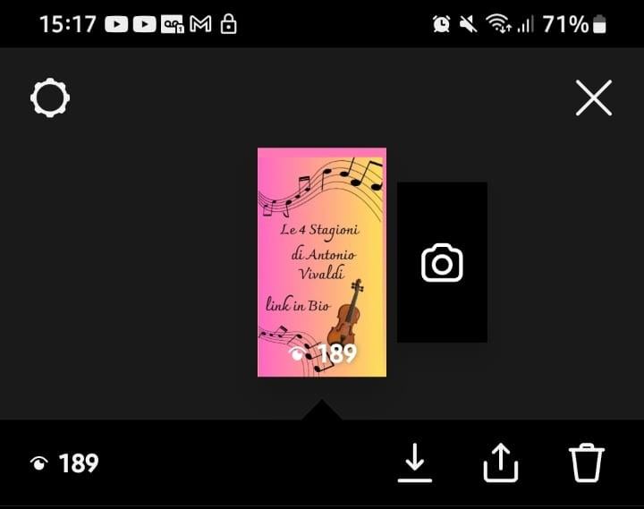

Obiettivi
Il sito ha lo scopo di offrire una breve ma soddisfacente divulgazione su Antonio Vivaldi
e sull'opera strumentale Le 4 stagioni .
Competitors
Siti che offrono un servizio simile sono: Liber Liber, Margutte, e L'angolo di Carla.
Liber Liber presenta una raccolta completa dei movimenti che compongono il concerto, ma nessuna descrizione di essi,
né i sonetti introduttivi che li accompagnano.
Margutte offre invece una buona introduzione all'autore e all'opera nel suo complesso,
ma non dà grande spazio ai singoli componimenti, offrendo infine un unico video nel quale poterli ascoltare,
senza però una distinzione netta tra di essi.
L'angolo di Carla offre invece una descrizione dei vari componimenti, distinguendoli tra di loro e offrendo per
ciascuno un video nel quale poterli ascoltare.
Manca però una biografia dell'autore, oltre che una distinzione dei vari movimenti con annessa descrizione.
Target
Utenti appassionati di musica classica o studenti che svolgono una ricerca scolastica.
Struttura e layout
Diagramma ad albero del sito

wireframe home

Wireframe home per device piccoli

Wireframe pagine

Wireframe documentazione

Opzioni grafiche utilizzate
Colore dei titoli: rgb(159, 17, 17)
Colore del background dell'header: rgb(150 125 86 / 97%)
Font dei titoli delle pagine: 'Ms Madi', serif, cursive.
Font per i paragrafi delle pagine:"Nunito Sans".
Entrambe le tipologie di font sono state prese dalla libreria di Google Font.
Comportamento della grafifa dei link: i link non aperti risultano colorati con rgb(255, 0, 0), al passaggio del puntatore diventano della tonalità rgb(255, 0, 0) una volta visitati, per rendere l'idea di un'azione già compiuta e portata a termine dall'utente, diventano della seguente tonalità: rgba(102, 106, 109, 0.635).
Linguaggi e strumenti
I linguaggi utilizzati sono: HTMl e CSS.
Per la responsivià del sito sono state usate le librerie di bootstrap.
Strategie comunicative
Background
Sul web esistono diverse piattaforme che, interessandosi di arte e musica, classica e non, hanno trattato le 4 Stagioni di Antonio Vivaldi.
Si è notato però, come l'attenzione venga posta sempre poco sull'autore e che vi sia una caranza esplicativa di come l'opera sia stata realizzata, delle sue finalità e di un'analisi delle sue varie componenti.
Se ne ricava un risultato soddisfacente all'apparenza, ma che può lasciare l'utente con diversi interrogativi, i quali vanno colmati con informazioni presenti in siti diversi, costringendo dunque a diverse ricerche.
Messaggio
Il sito vuole fornire all'utente delle informazioni base che possano soddisfarlo, fornendo delle interpretazione dei vari brani musicali riportati e offrendo una fonte certa e sicura dove poterli riascoltare.
Ogni composizione ha una pagina dedicata allo scopo di far capire l'importanza di ciascuna.
Forse l'utente è interessato a una sola di esse? Troverà una pagina apposita dove poter trovare tutte le informazioni di base necessarie. Il messaggio finale è che si possa fare informazione in modo breve e completo, fornendo tutte le informazioni di cui un'utente debba disporre, senza costringerlo a continue ricerche frammentarie, che spesso lasciano con una sensazione di "incompiuto".
Promozione
Condivisione link del sito tramite whatsapp. Creazione di una locandina pubblicata su instagram e raggiungimento di almeno 100 visualizzazioni.
Raggiungimento di almeno 50 utenti come visitatori.
La locandina era presentata nel seguente modo:

Numero di visualizzazioni della locandina:

Numero di utenti: